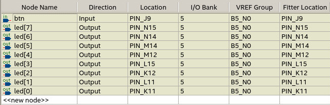
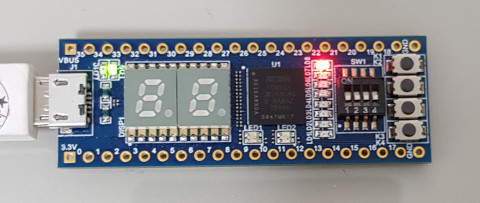
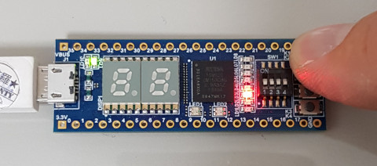

參考資訊：
https://www.stepfpga.com/doc/step-max10
main.vhd
library ieee;
use ieee.std_logic_1164.all;
entity main is
port(
btn : in bit;
led : out bit_vector(7 downto 0)
);
end main;
architecture logic of main is
signal cnt : bit_vector(7 downto 0) := "11111110";
begin
process(btn) is
begin
if (btn'event and btn = '0') then
cnt <= cnt rol 1;
end if;
end process;
led <= cnt;
end logic;
腳位


